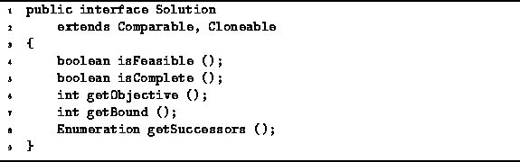

Data Structures and Algorithms
with Object-Oriented Design Patterns in Java
Data Structures and Algorithms
with Object-Oriented Design Patterns in JavaThis section presents an interface for the nodes of a solution space. By using an interface, we hide the details of the specific problem to be solved from the backtracking algorithm. In so doing, it is possible to implement completely generic backtracking problem solvers.
Although a backtracking algorithm behaves as if it is traversing a solution tree, it is important to realize that it is not necessary to have the entire solution tree constructed at once. Instead, the backtracking algorithm creates and destroys the nodes dynamically as it explores the solution space.
Program  defines the Solution interface.
The Solution interface extends the Comparable interface
defined in Program
and it extends the Cloneable interface defined in java.lang.
Each instance of a class that implements the
Solution interface represents a single node
in the solution space.
defines the Solution interface.
The Solution interface extends the Comparable interface
defined in Program
and it extends the Cloneable interface defined in java.lang.
Each instance of a class that implements the
Solution interface represents a single node
in the solution space.

Program: Solution interface.
The Solution interface extends the Comparable interface. Consequently, instances of the Solution class can be inserted in the various containers discussed in the preceding chapters. The Solution interface adds the following methods:
.
 Copyright © 1998 by Bruno R. Preiss, P.Eng. All rights reserved.
Copyright © 1998 by Bruno R. Preiss, P.Eng. All rights reserved.